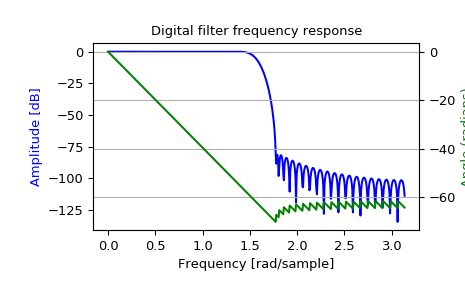

scipy.signal.freqz¶
-
scipy.signal.freqz(b, a=1, worN=512, whole=False, plot=None, fs=6.283185307179586)[source]¶ Compute the frequency response of a digital filter.
Given the M-order numerator b and N-order denominator a of a digital filter, compute its frequency response:
jw -jw -jwM jw B(e ) b[0] + b[1]e + ... + b[M]e H(e ) = ------ = ----------------------------------- jw -jw -jwN A(e ) a[0] + a[1]e + ... + a[N]e
- Parameters
- barray_like
Numerator of a linear filter. If b has dimension greater than 1, it is assumed that the coefficients are stored in the first dimension, and
b.shape[1:],a.shape[1:], and the shape of the frequencies array must be compatible for broadcasting.- aarray_like
Denominator of a linear filter. If b has dimension greater than 1, it is assumed that the coefficients are stored in the first dimension, and
b.shape[1:],a.shape[1:], and the shape of the frequencies array must be compatible for broadcasting.- worN{None, int, array_like}, optional
If a single integer, then compute at that many frequencies (default is N=512). This is a convenient alternative to:
np.linspace(0, fs if whole else fs/2, N, endpoint=False)
Using a number that is fast for FFT computations can result in faster computations (see Notes).
If an array_like, compute the response at the frequencies given. These are in the same units as fs.
- wholebool, optional
Normally, frequencies are computed from 0 to the Nyquist frequency, fs/2 (upper-half of unit-circle). If whole is True, compute frequencies from 0 to fs. Ignored if w is array_like.
- plotcallable
A callable that takes two arguments. If given, the return parameters w and h are passed to plot. Useful for plotting the frequency response inside
freqz.- fsfloat, optional
The sampling frequency of the digital system. Defaults to 2*pi radians/sample (so w is from 0 to pi).
New in version 1.2.0.
- Returns
- wndarray
The frequencies at which h was computed, in the same units as fs. By default, w is normalized to the range [0, pi) (radians/sample).
- hndarray
The frequency response, as complex numbers.
Notes
Using Matplotlib’s
matplotlib.pyplot.plotfunction as the callable for plot produces unexpected results, as this plots the real part of the complex transfer function, not the magnitude. Trylambda w, h: plot(w, np.abs(h)).A direct computation via (R)FFT is used to compute the frequency response when the following conditions are met:
An integer value is given for worN.
worN is fast to compute via FFT (i.e.,
next_fast_len(worN)equals worN).The denominator coefficients are a single value (
a.shape[0] == 1).worN is at least as long as the numerator coefficients (
worN >= b.shape[0]).If
b.ndim > 1, thenb.shape[-1] == 1.
For long FIR filters, the FFT approach can have lower error and be much faster than the equivalent direct polynomial calculation.
Examples
>>> from scipy import signal >>> b = signal.firwin(80, 0.5, window=('kaiser', 8)) >>> w, h = signal.freqz(b)
>>> import matplotlib.pyplot as plt >>> fig, ax1 = plt.subplots() >>> ax1.set_title('Digital filter frequency response')
>>> ax1.plot(w, 20 * np.log10(abs(h)), 'b') >>> ax1.set_ylabel('Amplitude [dB]', color='b') >>> ax1.set_xlabel('Frequency [rad/sample]')
>>> ax2 = ax1.twinx() >>> angles = np.unwrap(np.angle(h)) >>> ax2.plot(w, angles, 'g') >>> ax2.set_ylabel('Angle (radians)', color='g') >>> ax2.grid() >>> ax2.axis('tight') >>> plt.show()
Broadcasting Examples
Suppose we have two FIR filters whose coefficients are stored in the rows of an array with shape (2, 25). For this demonstration, we’ll use random data:
>>> np.random.seed(42) >>> b = np.random.rand(2, 25)
To compute the frequency response for these two filters with one call to
freqz, we must pass inb.T, becausefreqzexpects the first axis to hold the coefficients. We must then extend the shape with a trivial dimension of length 1 to allow broadcasting with the array of frequencies. That is, we pass inb.T[..., np.newaxis], which has shape (25, 2, 1):>>> w, h = signal.freqz(b.T[..., np.newaxis], worN=1024) >>> w.shape (1024,) >>> h.shape (2, 1024)
Now, suppose we have two transfer functions, with the same numerator coefficients
b = [0.5, 0.5]. The coefficients for the two denominators are stored in the first dimension of the 2-D array a:a = [ 1 1 ] [ -0.25, -0.5 ]
>>> b = np.array([0.5, 0.5]) >>> a = np.array([[1, 1], [-0.25, -0.5]])
Only a is more than 1-D. To make it compatible for broadcasting with the frequencies, we extend it with a trivial dimension in the call to
freqz:>>> w, h = signal.freqz(b, a[..., np.newaxis], worN=1024) >>> w.shape (1024,) >>> h.shape (2, 1024)